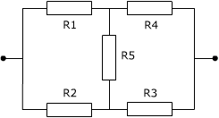

| Las resistencias no están todas en serie o paralelo. Normalmente se podrá encontrar un grupo de resistencias que sí están en se-rie o paralelo y que se podrá sustituir por su equivalente En el nuevo circuito se busca otro grupo de resistencias en serie o paralelo para sustituirlo por su equivalente. Y así sucesiva-mente hasta dejar una única resistencia que será la equivalente Hay asociaciones cuyo equivalente no se puede obtener por es-te método, por ejemplo:  |